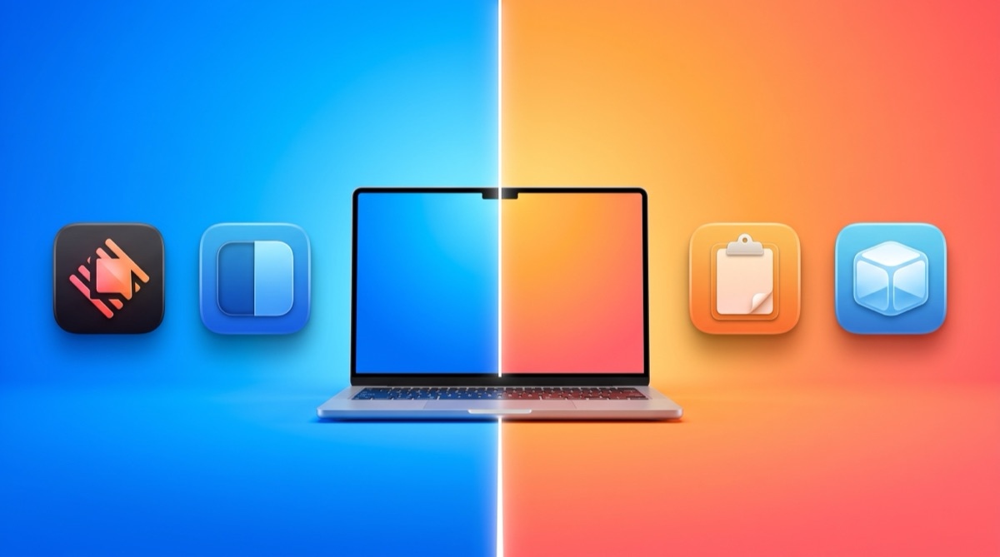
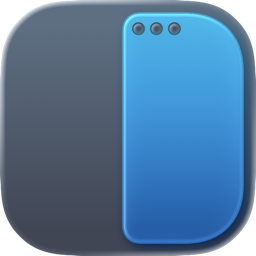

Superdock
SuperdockBest Mac apps for keeping work and personal separate

Short answer. Start with browser profiles, which cost nothing and solve most of it. Add Focus modes to stop work notifications reaching you after hours. If you need genuine isolation rather than tidiness, a separate macOS user account is the only complete answer. Apps help at the margins, and most people need far less than they think.
A disclosure. I make a Mac app that touches this problem, and it appears fifth on this list rather than first. Three of the six approaches below are free and built into macOS, and for most readers those are the whole answer.
Decide what separate means first
People asking this question want one of three different things, and the right answer depends entirely on which.
- Tidiness. You want work bookmarks, logins and history not tangled with personal ones. Browser profiles solve this completely.
- Not embarrassing yourself. You want to be sure the wrong tab is not visible on a screen share. This is mostly about visible identification.
- Genuine isolation. You need your employer unable to see personal data, or the reverse. This needs separate accounts or separate machines, and no utility substitutes for it.
Most people want the first two and reach for tools built for the third.
The approaches, weakest separation first
- Two browsers. Chrome for work, Safari for personal. Free, instant, and surprisingly effective because the apps look different. It falls apart past two identities.
- Browser profiles. Separate cookies, extensions, bookmarks and logins inside one browser. This is the correct default, and it is what the rest of this list builds on.
- Focus modes. Built into macOS. A Work focus can allow only certain apps and people to notify you, and it syncs across your devices. Free and underused.
- A separate macOS user account. Genuine separation of files, apps, keychains and preferences. Fast user switching makes it tolerable. The cost is that everything needs setting up twice and background tasks in the other account keep running.
- A separate machine. Complete, expensive, and what your employer probably prefers.
Where the browsers stand
Firefox has the best answer nobody talks about. Multi-Account Containers put several identities in one window, colour-coded per tab, without separate windows at all. If you are willing to use Firefox, this is the most elegant solution available and it is free.
Safari gained profiles recently and they work well, with the bonus that a Safari profile can be given its own Shortcut and Dock icon, which is genuinely useful.
Chrome has profiles with real isolation, but no container equivalent and, on a Mac, every profile shares one Dock icon and one Command-Tab entry. That last part is the specific gap my app addresses.
The apps worth adding
Raycast
Launch a specific browser profile by name from the keyboard instead of hunting through a menu.
The free tier is enough. Alfred does the same with its paid Powerpack.
Maccy
Clipboard history, and it respects the concealed clipboard type that password managers use, so copied passwords are not retained.
Relevant here because a shared clipboard is one of the quiet ways work and personal leak into each other.

Rectangle
Keeps work windows on one side and personal on the other with a keyboard shortcut, which sounds trivial and is not.
Physical position is a surprisingly strong memory aid for which context you are in.
Ice
Hides menu bar icons, which matters before a screen share when work tools are sitting in plain view.
A small thing that removes one item from the pre-call panic.

Superdock
Mine, so judge it hardest. It gives each Chrome profile its own Dock icon with that profile's avatar, so you can see which identity you are about to click rather than discovering it after the window opens. It solves exactly one part of this problem.
Only relevant if you use Chrome and run several profiles. Firefox users should use Containers instead, and Safari users should use Shortcuts.
At a glance
| Approach | Cost | Separates | Verdict |
|---|---|---|---|
| Two browsers | Free | Logins, history | Best for exactly two identities |
| Browser profiles | Free | Logins, cookies, extensions | Best default for almost everyone |
| Firefox Containers | Free | Cookies per tab | Best if you will switch to Firefox |
| Focus modes | Free | Notifications, time | Best for stopping work reaching you at night |
| Separate user account | Free | Everything | Best if you need real isolation |
| Superdock | $7.99 once | Visible identity in the Dock | Best only if you are on Chrome with several profiles |
Who should skip all of this
If you have one work account and one personal account and you rarely mix them, use two browsers and stop. You do not need profiles, you do not need Focus modes, and you certainly do not need my app. The setup cost of separation only pays back when you are switching many times a day.
Frequently asked questions
Do browser profiles actually keep my employer out of my personal browsing?
No. On a company-managed Mac, management software can generally see far more than a browser profile hides. Profiles are for organisation and convenience, not for privacy from your employer. If that is your concern, use a personal device.
Firefox Containers or Chrome profiles?
Containers are more elegant because several identities live in one window. Chrome profiles separate more thoroughly, including extensions. If you are already on Chrome, profiles are the practical answer.
Is a separate macOS user account worth the hassle?
If you genuinely need file and keychain separation, yes, and nothing else substitutes. For most people it is more than the problem requires.
How many profiles is too many?
People report that things get unwieldy past about six, mostly because telling them apart becomes the new problem. That is a recognition issue rather than a browser limitation.
Download free Superdock is free to download. The dock, window previews, the switcher and multi-display support are all free. Chrome profile icons: 14 days free, then $7.99 once. macOS 14 or later.
Continue reading

Independent macOS developer and the author of Superdock. I switched to a Mac from Windows, lost the per profile taskbar buttons I relied on, and built the dock I wanted instead. I write these guides from daily use of the apps in them, and I answer the support email myself.